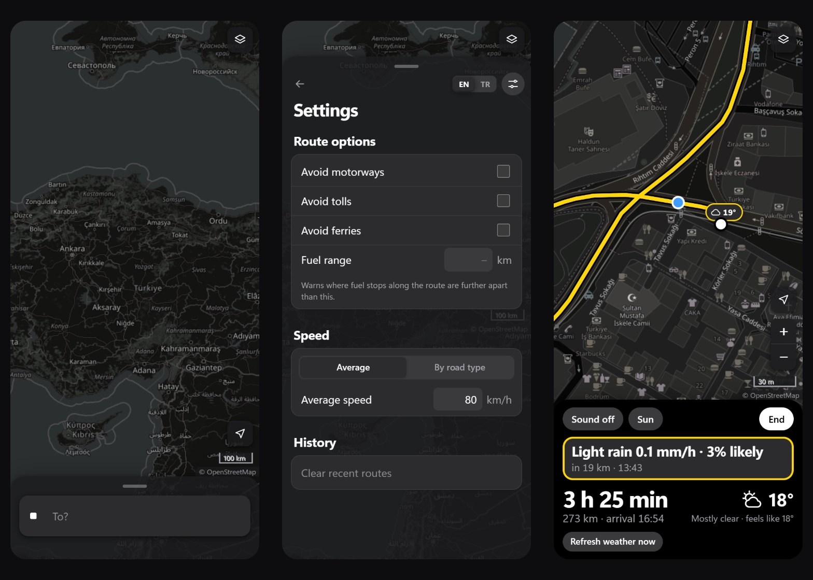

ridecast part 4: one screen for the ride
the 29 stages were done, so I started using ridecast the way I would before a ride, on my phone, and everything that annoyed me became the next change. part 4 is that list: the app now opens on the map with only a search bar, the settings moved off the main panel, riding has one screen with the map on top and the numbers underneath, a warning that kept disappearing turned out to be a rule worth changing, and two features are gone. one more change is not in the code: the repository is private now and the app is no longer online, because I want to take it further before showing it again. the posts go on.
previous posts: part 1 · part 2 · part 3
the map first
the app used to open with the panel already covering 42% of a phone screen. Google Maps opens on the map with a search bar, and that is what my thumb expected, so ridecast now does the same: collapsed with no route, the panel shrinks to the destination field of the trip card and nothing else. tapping it opens the full panel with the cursor in the field. on a desktop the floating card shrinks the same way and unrolls down from the bar when it opens. with a route, the collapsed panel keeps its old height, so the arrival time is still visible. none of it is a new component: the compact bar is the existing trip card with every other row hidden.
the panel also got a back arrow. it clears the whole trip, meaning stops, route, breaks, weather, warnings and the link in the address bar, and goes back to the bare map. it does not touch the settings, and it leaves the map where it was, because losing my place on the map every time I start over would be worse than the clutter.
two bugs came from my own changes. the settings button and the panel's "settings are open" state had the same class name, so on a desktop the panel took the button's centring and margins and jumped when I opened the settings. and on a phone the round header buttons reach 6 px above their row, but the panel's scroll area started at 78 px from the top of the screen while the buttons started at 75: 3 px of every circle were cut off. both were one-line fixes once measured; neither was visible in the code.
the third one was the phone keyboard. tapping the search bar started a 0.45 second slide up, and the keyboard opened during the slide. the phone scrolls the page so that the focused field stays above the keyboard, and it measured the field while it was still near the bottom of the screen, so the whole panel went up too far. tapping a field now opens the panel at once, without the slide, so the field is already at the top when the keyboard asks where it is; the slide is still there when the panel is opened by its handle. on Android I also told the browser to shrink the page for the keyboard instead of scrolling it. I could not test the keyboard itself, because the headless browser I test with has none.
settings out of the way
route options, the fuel range and the speed settings are things I set once and forget, but they filled the middle of the main panel. they now live on a settings page behind a button in the panel header, with a new "clear recent routes" at the bottom, and the main panel keeps what changes from trip to trip: the stops, the vehicle, the departure and the breaks. the back arrow leaves the settings before it clears anything.
the rest were details my thumb found. the clear button inside the address fields sat right against the text; it now has an 8 px gap and a 44 px target. "add stop" started 16 px left of the addresses above it, at a smaller size; it now lines up with them at the same size, with the plus sign in the column of the stop dots. and when the panel opens, its rows rise in over 0.3 seconds; with the desktop card unrolling, that is all the motion I added.
one screen for the ride
live mode used to be a separate full-screen view of large numbers, with a small "map" button that shrank it to a pill over the map. on the bike I want to see where I am, so starting a ride now opens the map with a card at the bottom, and there is no other view. the map is north up, because a browser gives no reliable heading, and it follows every GPS fix at zoom 18. at Istanbul's latitude one screen pixel at that zoom is 0.45 m, so the 100 px scale bar would be 45 m and rounds down to 30 m, which is the view I asked for. pinching or the plus and minus buttons, which normally hide on phones, change the zoom, and the next fixes keep it.
like Google Maps, dragging the map stops the following. in the test the rider's dot moved from the middle of the screen to where I dragged it, the next fix moved the dot but not the map, and the "my location" button turned blue. tapping it put the dot back in the middle, and the following went on. the card holds everything the old view had: the next warning with its distance and time, the time and distance left with the arrival, the weather here, the off-route button and the sound and sunlight switches. the dot is centred in the part of the map above the card, not in the whole screen, so the card never covers it.
taking the screenshots for this post found one more bug: the dot was under the route line. the route is redrawn on every re-plan, and each new line landed on top of the dot. the position dots now have their own layer above the lines.

a warning that came and went
after a ride had started, the next warning on the card would disappear after a while. I started a ride at the start of the Kadıköy to Eskişehir route and read the card every 12 seconds. my first run showed the card going blank after two minutes, and the cause was me: I was deleting files in another window, and the development server reloaded the page. the second run used a production build that my edits could not touch.
| time | next warning on the card | arrival there |
|---|---|---|
| 13:13:39 | crosswind gusts 26 km/h from the left, 234 km ahead | 16:09 |
| 13:15:40 | the same crosswind | 16:11 |
| 13:15:52 | light rain 0.1 mm/h, 3% likely, 20 km ahead | 13:30 |
| 13:19:29 | the same light rain | 13:33 |
the warning list itself was right. two things moved it. standing still, every arrival time slides later by the minutes I wait, because live mode counts the rest of the trip from now; on a real ride that slide mostly does not happen. the second one does happen on a real ride: each point took the forecast hour closest to its arrival, so an arrival that drifted from 13:29 to 13:31 switched from the 13:00 forecast to the 14:00 one, and a warning could appear or vanish on those two minutes. that is what happened at 13:15:52.
an arrival time is never exact to the minute, so a point between two forecast hours now looks at both and keeps the worse one, or the closer one when they are equal. at the start of the same route, reached at 13:21, it now takes the 30 km/h crosswind of the 14:00 forecast. the planner and the departure scores use the same rule, so they show a few more warnings than before. I chose that on purpose: on a bike, a warning that turns out not to be needed costs less than one that disappears two minutes before it would have mattered.
less to carry
two features from part 3 are gone: opening and saving GPX files, and the calendar export. both were about moving a plan into another app, and I never used either. they took their parser, their writers, their tests and their texts with them, and the app no longer saves any file. "copy link" became a link icon next to "start ride".
the browser automation I had used for testing did not connect in this round, so every check above ran in headless Chrome, driven over its debugging protocol by a small script: fake GPS positions, taps, drags and screenshots at phone and desktop sizes. it is slower to set up than clicking around, but it gave me exact numbers, like the 3 px and the 13:15:52 above, instead of impressions.
what this does not show
still no real ride, and the ride screen now depends on it more than anything did before: GPS on a phone in a mount, gloves on the zoom buttons, the keyboard fix on a real phone and a screen that has to stay on. the worse-of-two-hours rule has been checked on one route on one day. and with the app offline and the code private, this blog is now the only public part of ridecast.